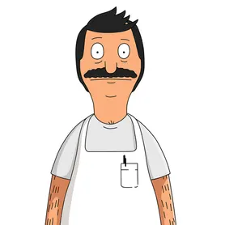
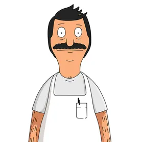

Bob's Burgers is an animated sitcom created from the mind of Loren Bouchard broadcasted on Fox Broadcasting Company. It is an American show that takes place in a town called Simore's Bay. It follows around a family-owned business run by the Belchers. The resturant is named Bob's Burgers after the head of the family, and the main protagonist, Bob Belcher.


 

Bob Belcher
Linda Belcher
Teddy
Tina Belcher
Gene Belcher
Louise Belcher
January 9, 2011 Bob's Burgers Season 1 Airs
May 22, 2016
Bob's Burgers'
100th Episode is Released
September 29, 2019
Bob's Burgers'
10th Season Airs
.jpg)
May 27, 2022
Bob's Burgers'
Movie is Released
Trivia
- Tina was almost a boy. The original oldest Belcher was a 13 year-old boy named Daniel.
- A lot of the Parks and Rec cast was put on the show to do some voice acting.
- Bob's Burgers takes place in New Jersey in an imaginary town called Simore's Bay.
- The orginal concept for Bob's Burgers was a canibal family that makes burgers out of human flesh.
- John Roberts was casted as Linda Belcher because of his YouTube video he made mocking his mother.
- A Bob's Burgres fan started creating the 'Burger of the Day' burgers and the producer collaborating
with him to make a cook book. - The cast all gets together to record lines that way they can improvise lines with each other.
- Bob has a tattoo of his nose and moustache on his lower back.
- H. John Benjamin doesn't read the scripts beforehand.
- There is a fan theory that the show is about Bob coping with the death of his family.